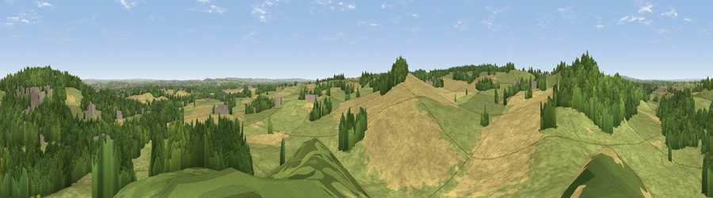

Viewpoint near Mile Oak
#28485 in England · top 32% of its area beats it · near Mile OakWhere it is
The exact computed spot (SK 15725 02275). Click the marker for map links.
The view, rendered

A 360° render of this exact spot computed from the terrain model, tree cover and land cover — summer colours, afternoon light, calibrated against photographs of famous viewpoints. Real trees, hedges and buildings will differ in detail.
The panorama
Grey silhouette: terrain skyline in each direction (720 bearings, Earth curvature and refraction included). Dashed green: skyline with trees (+15 m) and buildings (+8 m) as obstacles. Blue strip: how far the ground is visible on each bearing.
Where the view opens
Wedge length = distance to the farthest visible ground on that bearing (vegetation-aware). Rings at 10, 25 and 50 km.
What fills the view
45% grassland · 28% cropland · 24% woodland · 2% built-up
Angular shares of the visible panorama (visual magnitude), not map area. Landscape diversity 0.50 (0–1 Shannon).
Key numbers
More beautiful places nearby
The staircase of upgrades: each row has a higher view potential than everything closer. Driving times are estimates from straight-line distance, calibrated against real road routing — check an actual route before setting out.
| Place | Direction | Drive | Score |
|---|---|---|---|
| Viewpoint near Mile Oak | SSW · 1 km | ~3 min | 43.1 |
| Viewpoint near Mile Oak | WNW · 1 km | ~3 min | 55.1 |
| Viewpoint near Streetly | WSW · 11 km | ~20 min | 69.5 |
| Windmill Hill | SW · 31 km | ~48 min | 73.2 |
| Viewpoint near Clent | SW · 31 km | ~48 min | 73.8 |
| Viewpoint near Clent | SW · 31 km | ~49 min | 74.3 |
| Viewpoint near Stanton under Bardon | ENE · 32 km | ~50 min | 76.0 |
| Viewpoint near Woodhouse Eaves | ENE · 37 km | ~56 min | 77.7 |
52.61802, -1.76917 · source: screening · position refined by local search. Computed location — check access rights before visiting.